Customer experience audit
Too Good To Go
Customer reviews reveal where the Surprise Bag experience falls short. Journey mapping and PERFA coding connect the findings to two proposed service concepts.
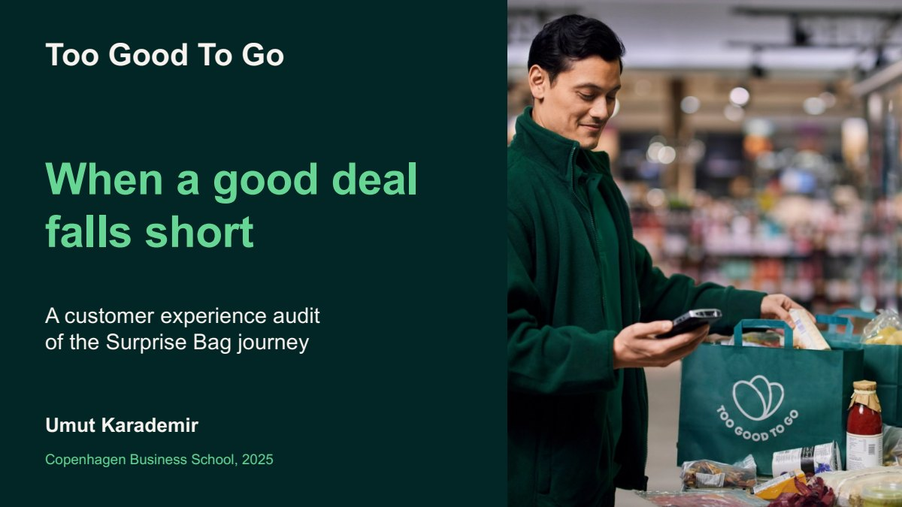
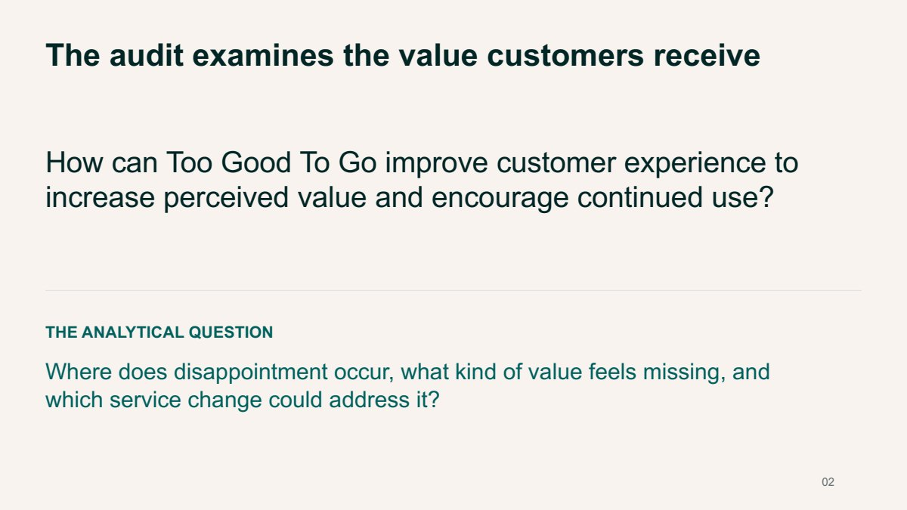
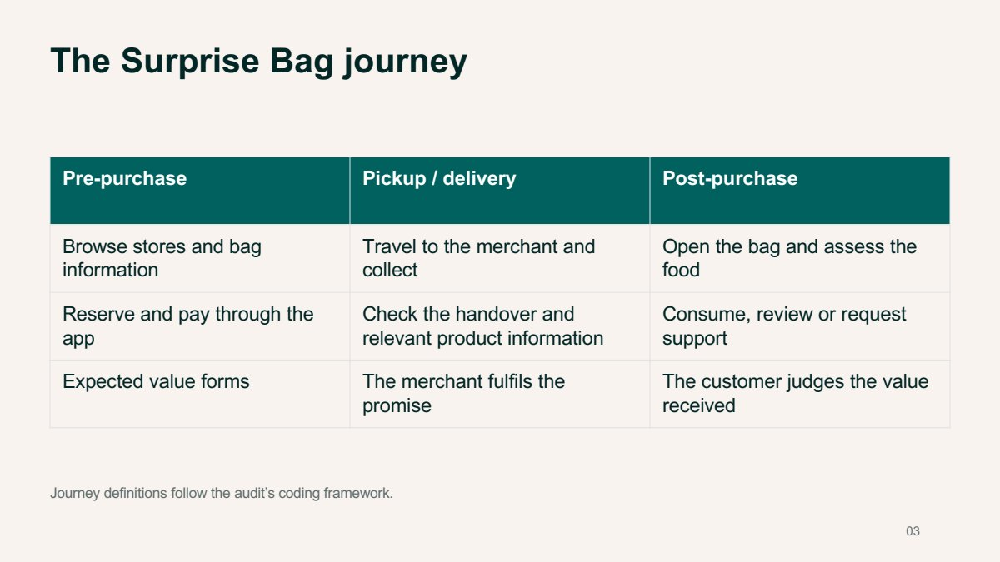
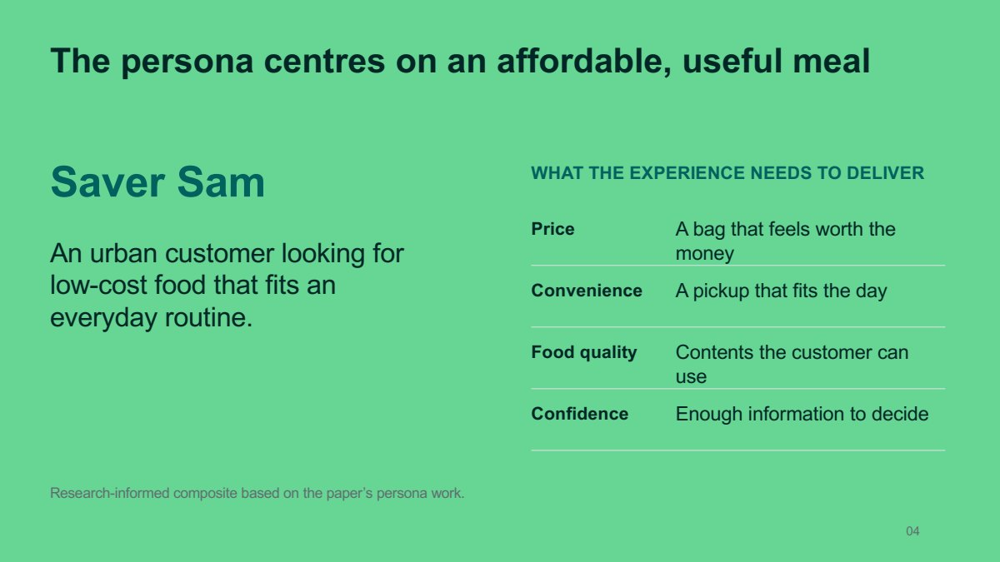
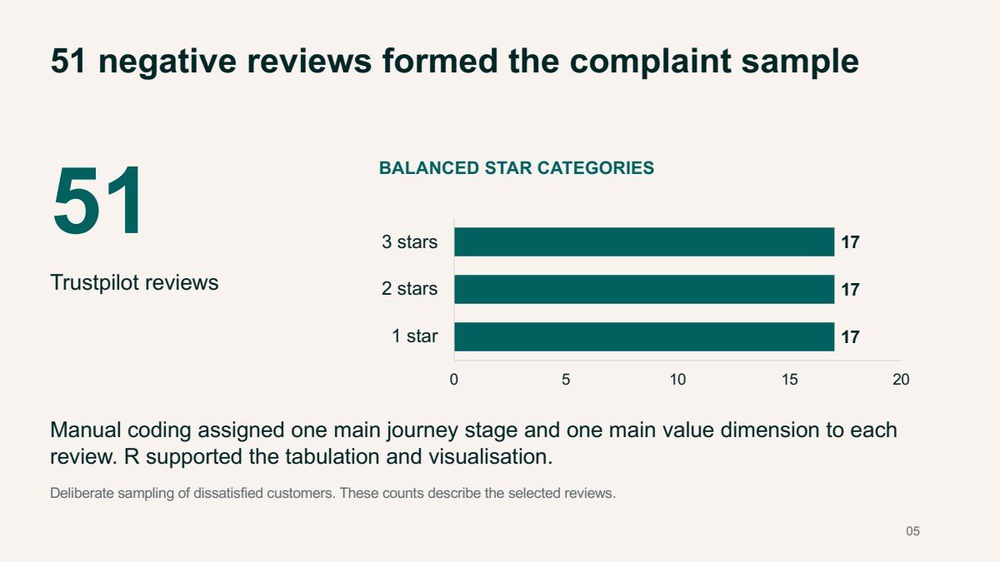
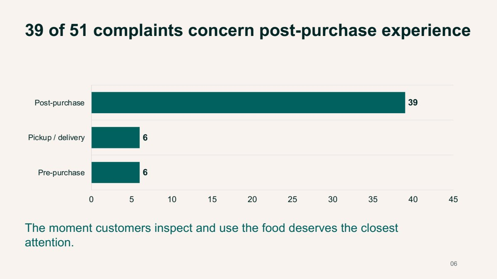
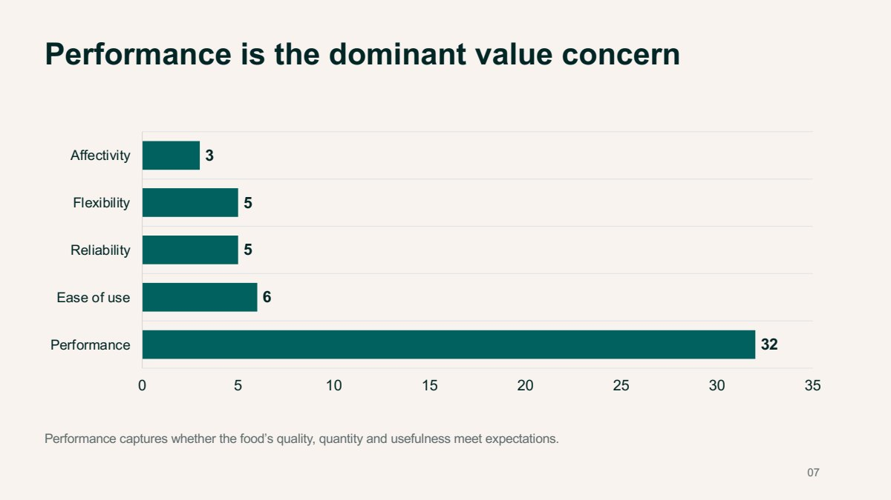
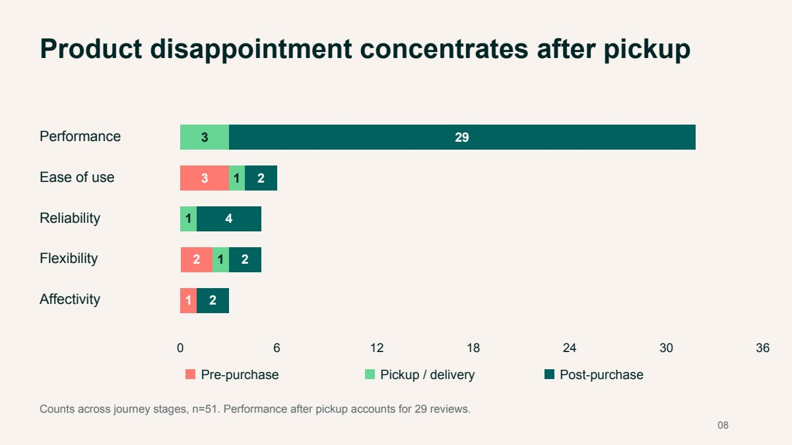
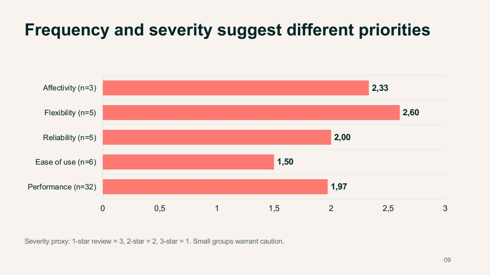
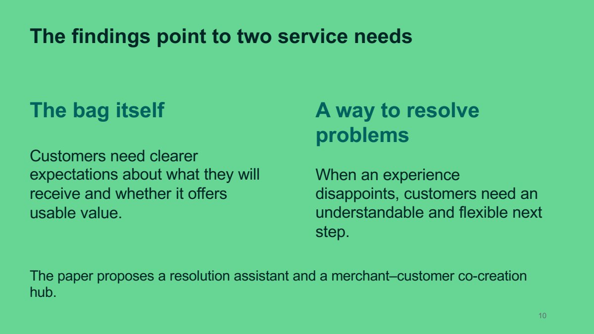
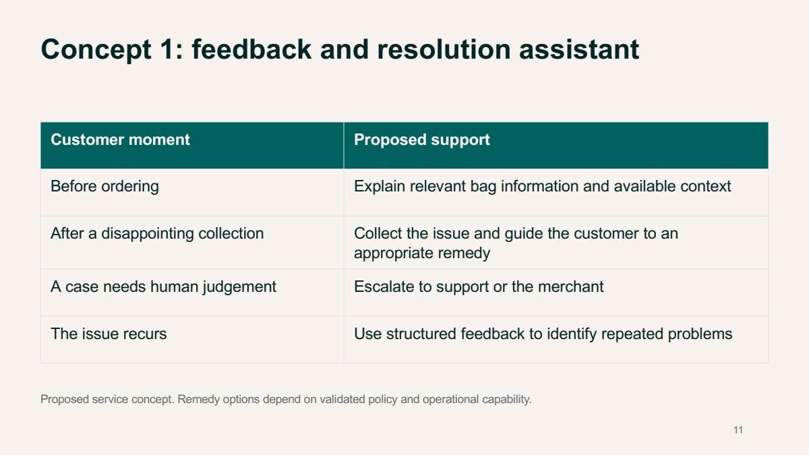
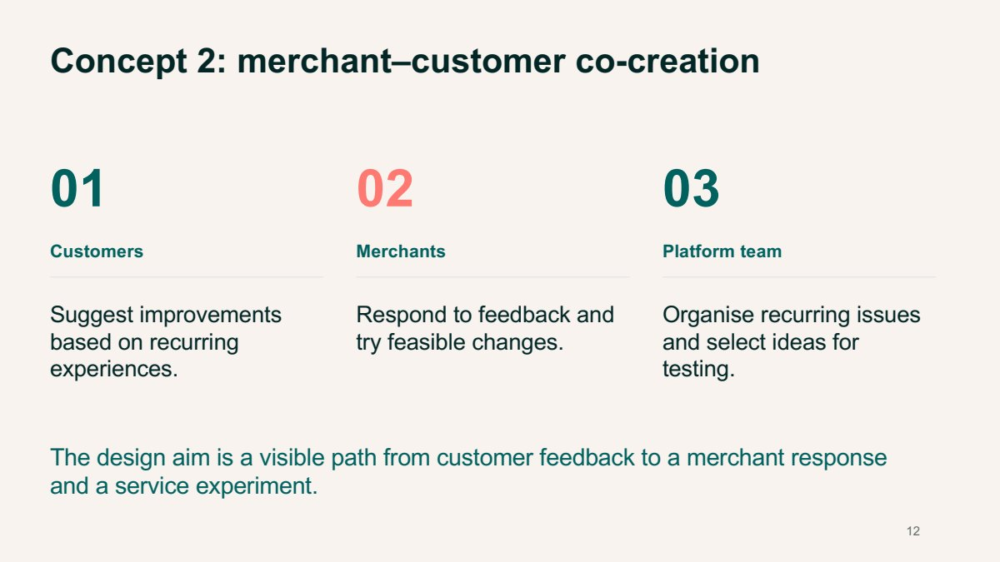
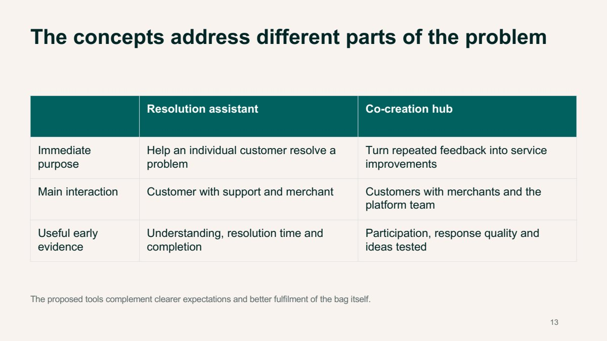
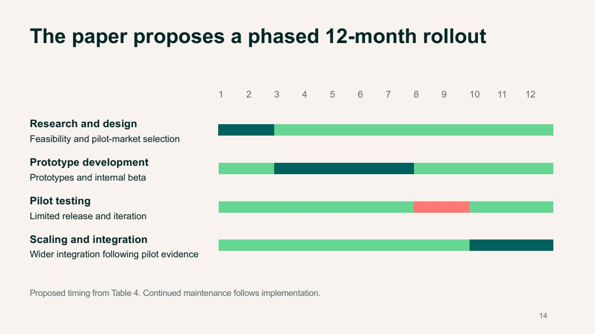
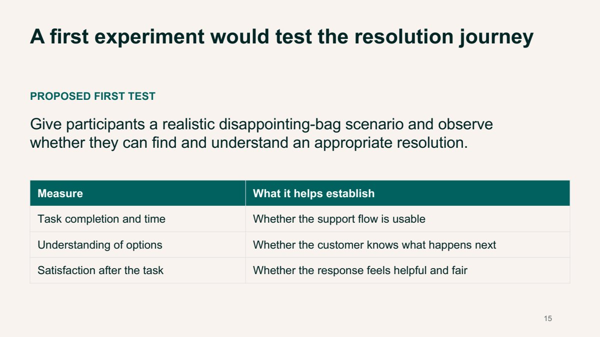
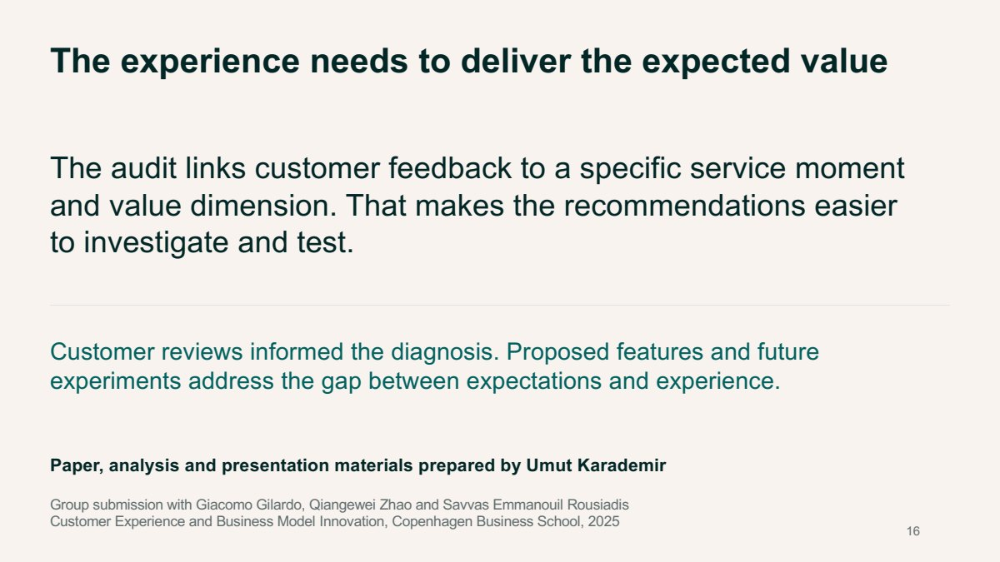